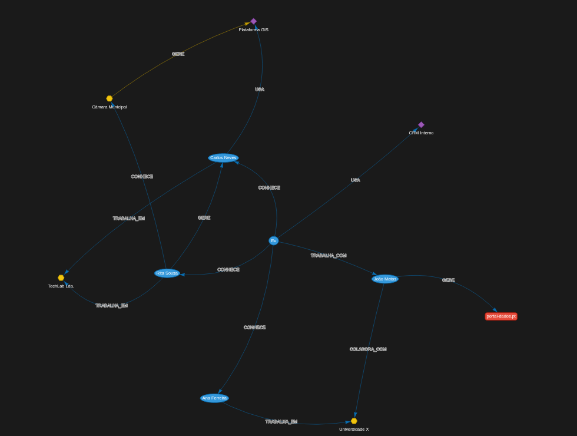

Instalamos capacidade avançada de análise — inteligência artificial, tratamento de informação e investigação forense — diretamente na infraestrutura do cliente. Sem dependência de serviços externos, sem risco de interrupção, sem que um único documento saia do seu domínio. Os sistemas continuam a funcionar mesmo que a ligação ao exterior falhe: a capacidade que instalamos é sua, e permanece sua.
A Pedro Horta Unipessoal, Soluções Forenses e de IA reúne uma equipa de especialistas altamente qualificados em inteligência artificial, cibersegurança, projeção de negócios e business intelligence — complementada por uma rede consolidada de facilitadores de negócios, que abre portas onde a tecnologia, por si só, não chega.
Trabalhamos para escritórios de advogados, empresas com exigências de controlo interno e instituições culturais, sob um princípio que não negociamos: os dados do cliente permanecem, em todas as fases do trabalho, sob o controlo estrito do cliente.
Cada projeto é conduzido com o rigor de quem sabe que trata matéria sensível: método documentado, confidencialidade contratual e entrega verificada em funcionamento — com formação das equipas e acompanhamento após a entrega.
Tudo corre nos computadores e servidores do cliente. Nenhum dado é enviado para a internet ou para serviços de terceiros.
Nos trabalhos que o exigem, operamos em ambiente totalmente isolado, com sigilo garantido do primeiro contacto ao relatório final.
Sem subscrições obrigatórias, sem dependência de APIs externas, sem risco de um fornecedor distante interromper a sua operação.
Mais de duas décadas de prática forense e de análise de processos, aliadas ao domínio das técnicas mais recentes de IA.
Seis áreas de intervenção, um denominador comum: capacidade instalada no cliente, resultados mensuráveis e informação que nunca sai do seu controlo.
A informação da sua organização vale pouco enquanto estiver dispersa por pastas, caixas de correio e arquivos. Através da vetorização inteligente da informação e da extração e combinação de dados de milhares de documentos — relatórios, contratos, correspondência, bases de dados — construímos sistemas de apoio à decisão de alto nível: perguntas complexas respondidas em segundos, sempre com identificação das fontes.
Os sistemas que instalamos trabalham de forma autónoma: analisam, cruzam informação, sinalizam o que exige atenção e preparam sínteses prontas para decisão — tarefas que hoje consomem dias de trabalho qualificado.
Independência total de serviços de chat de terceiros: tudo corre nos seus servidores, continua operacional se a ligação ao exterior falhar e não expõe um único documento a fornecedores externos.
A nossa equipa integra especialistas com mais de 20 anos de experiência em investigação forense e análise de processos. Combinamos os meios tradicionais de investigação com soluções de inteligência artificial que multiplicam a capacidade de análise: deteção de incongruências entre documentos, cruzamento sistemático de documentação e reconstrução de cadeias de factos.
O que nos distingue é a confidencialidade absoluta: os modelos são instalados e correm no gabinete onde o processo é tratado, totalmente offline. Nenhum dado sai do escritório — nem para a internet, nem sequer para nós.
Desenvolvemos igualmente soluções específicas a pedido, como assistentes de conversação preparados para a análise de peças processuais, ao serviço do advogado ou do responsável de controlo interno.
Um serviço de transformação digital para instituições culturais: criação de quiosques inteligentes e de motores de pesquisa em linguagem natural assentes no acervo documental e fotográfico digitalizado da própria instituição. Um salto quântico na forma como a cultura é acedida: os investigadores interrogam décadas de documentação em minutos, os técnicos ganham uma ferramenta de apoio à decisão sobre o próprio acervo e os visitantes passam a explorar a coleção por conversa.
Contamos com uma ampla rede de especialistas e criamos cada projeto de raiz, adaptado à realidade concreta de cada arquivo — dimensão do acervo, estado da digitalização, equipa disponível.
E porque o financiamento é decisivo, apoiamos a instituição na elaboração de candidaturas a fundos comunitários para viabilizar o projeto.
Painéis de indicadores, análise de mercado e modelos de projeção que transformam os dados da empresa em decisões fundamentadas: onde investir, o que corrigir, quando avançar. Relatórios claros, escritos para a administração — não para técnicos.
Recolha e análise sistemática de informação pública sobre parceiros, fornecedores e contrapartes: verificação de historial, deteção de sinais de risco e relatórios de suporte à contratação e à negociação — com método, discrição e fontes documentadas.
Desenvolvimento de aplicações dedicadas — leves, seguras e desenhadas para o fluxo de trabalho real de cada cliente — acompanhado da formação das equipas que as vão utilizar. Entregamos a funcionar, com documentação, e mantemos acompanhamento próximo após a entrega.
Disponibilizamos gratuitamente pequenos utilitários de software, em regime open-source sob a licença Apache 2.0 — ferramentas completas, sem versões limitadas nem custos escondidos.
O nosso compromisso: estes utilitários são e serão sempre gratuitos. Quem desejar contribuir voluntariamente deve saber que 100% dos valores arrecadados são entregues a instituições de solidariedade social de apoio às crianças nos Açores. Com transparência total: cada doador pode consultar, a qualquer momento, exatamente para que instituição o seu contributo foi canalizado — basta escrever-nos para admin@pedrohorta.pt.

Gestor visual da sua rede de contactos profissionais. Mapeie pessoas, empresas e ferramentas num grafo interativo e faça perguntas à rede:
Os seus dados ficam apenas no seu computador, num ficheiro local.
Uma primeira reunião, presencial ou à distância, sem compromisso — para compreender o seu problema e dizer-lhe, com franqueza, se e como o podemos resolver.
Matérias sensíveis são tratadas com total confidencialidade desde o primeiro contacto.